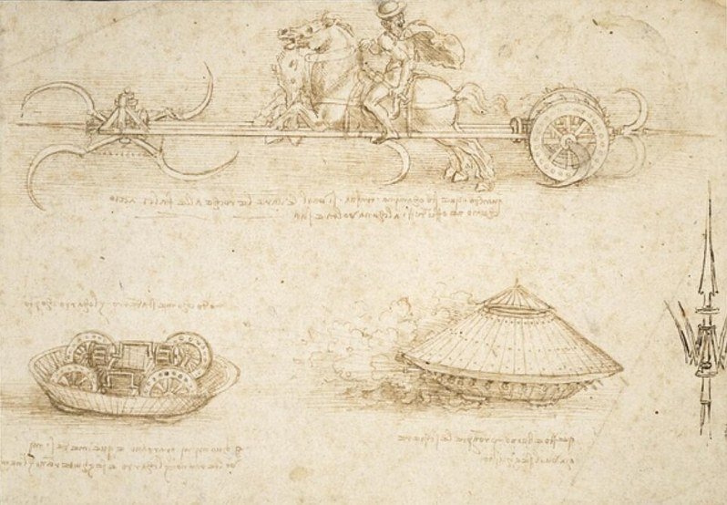

On the last page you read Leonardo's job application. Look again at one promise from it, item 6:
In his own words
I will make covered chariots, safe and unattackable which, entering among the enemy with their artillery, there is no body of men so great but they would break them.
In the letter, it is just a sentence. Here is that idea as Leonardo drew it, around 1485, with a chariot that has spinning blades.

Look at the care in it: the horse, the wheel, the way the shell is built up in panels. This is the same hand that sketched a gentle baby curled up in the womb. Yet in another part of his notebooks, Leonardo wrote something very different. It is one of his short riddles, called "prophecies," where he describes something without naming it and makes you guess. This one is titled "Of the Cruelty of Man."
A riddle: "Of the Cruelty of Man"
Animals will be seen on the earth who will always be fighting against each other with the greatest loss and frequent deaths on each side. And there will be no end to their malignity; by their strong limbs we shall see a great portion of the trees of the vast forests laid low throughout the universe; and, when they are filled with food the satisfaction of their desires will be to deal death and grief and labour and wars and fury to every living thing; and from their immoderate pride they will desire to rise towards heaven, but the too great weight of their limbs will keep them down.
Can you guess the "animals"? They are people. Leonardo describes human beings as if he were an outsider seeing us for the first time, and he does not like what he sees.
So here is the puzzle. The man who drew that chariot with such care also wrote, in his own private notebook, that people bring death and grief to every living thing. He designed machines for war, and he wrote that people bring death to every living thing. He never explained how both could be true.
500 years later
In 2009, a TV series called Doing DaVinci on the Discovery Channel set out to build some of his war designs, including an armored tank, a scythe chariot and a catapult, to see whether they would actually have worked.
Words to know
- malignity
- a strong wish to do harm
- immoderate
- far too much, with no limit
- prophecy
- here, one of his riddles, written like a prediction
Try it
Optional. For after your session with Rocky, on your own time. Ask a grown-up before you use any website.
- Read about the TV show that built his war machines.
- Design a peaceful use: pick one machine in the drawing and invent a way to use it to help people, for example during a flood or an earthquake. Sketch it, and label the parts.